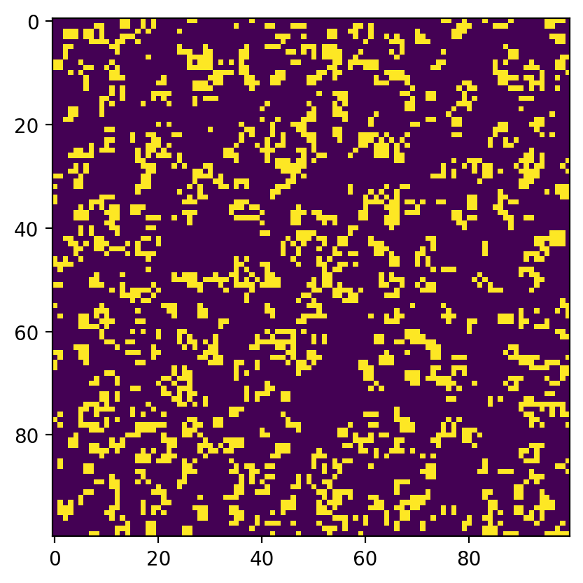

Chapter 3: Conway’s Game of Life
Contents
Chapter 3: Conway’s Game of Life#
Adapted from: “Python Playground: Geeky Projects for the Curious Programmer” by Mahesh Venkitachalam (No Starch Press)
Program to run Conway’s Game of Life#
%matplotlib inline
import numpy as np
import matplotlib.pyplot as plt
import matplotlib.animation as animation
from IPython.display import HTML
# Define constants
ON = 255
OFF = 0
vals = [ON, OFF]
def randomGrid(N):
""" returns a grid of N x N values """
return np.random.choice(vals, N*N, p=[0.2, 0.8]).reshape(N, N)
def addGlider(i, j, grid):
""" adds a glider with top-left cell at (i, j)"""
glider = np.array([[0, 0, 255],
[255, 0, 255],
[0, 255, 255]])
grid[i:i+3, j:j+3] = glider
def update(framenum, img, grid, N):
# copy grid since we require 8 neighbors for calculation
# and we go line by line
newGrid = grid.copy()
for i in range(N):
for j in range(N):
# compute 8-neighbor sum using toroidal boundary conditions
# x and y wrap around so that the simulation
# takes place on a toroidal surface
total = int((grid[i, (j-1)%N] + grid[i, (j+1)%N] +
grid[(i-1)%N, j] + grid[(i+1)%N, j] +
grid[(i-1)%N, (j-1)%N] + grid[(i-1)%N, (j+1)%N] +
grid[(i+1)%N, (j-1)%N] + grid[(i+1)%N, (j+1)%N])/255)
# apply Conway's rules
if grid[i, j] == ON:
if (total < 2) or (total > 3):
newGrid[i, j] = OFF
else:
if total == 3:
newGrid[i, j] = ON
# update data
img.set_data(newGrid)
grid[:] = newGrid[:]
return img,
# Set Grid Size (N)
N = 100
# Set Update Interval (updateInterval)
updateInterval = 50
# Declare Grid
grid = np.array([])
# populate grid with random on/off - more off than on
grid = randomGrid(N)
# set up the animation
fig, ax = plt.subplots()
fig.dpi = 200
img = ax.imshow(grid, interpolation='nearest')
# I changed the number of frames from 10 to 100 in the next line.
ani = animation.FuncAnimation(fig, update, fargs=(img, grid, N, ),
frames = 500,
interval = updateInterval,
save_count = 50)

# number of frames?
# set the output file
# I added the next two lines to get script to work.
Writer = animation.writers['ffmpeg']
writer = Writer(fps=15, metadata=dict(artist='Me'), bitrate=1800)
# Show the animation
#plt.show()
#HTML(ani.to_jshtml())
#HTML(ani.to_html5_video())